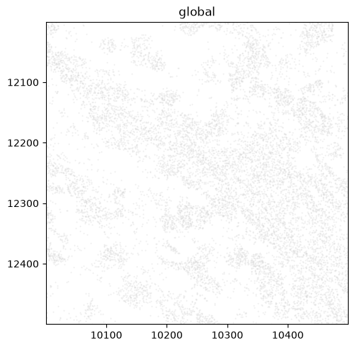
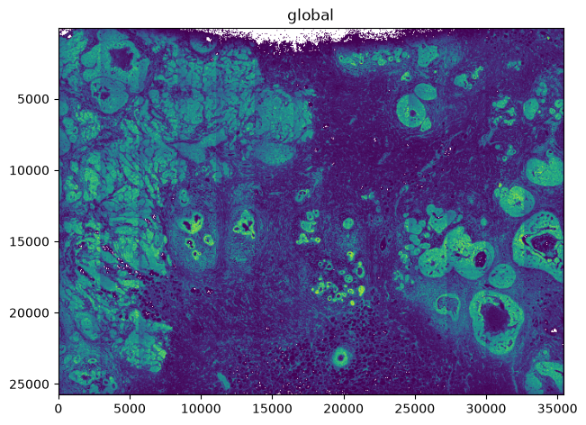
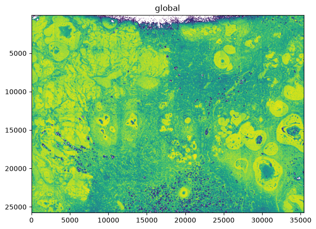
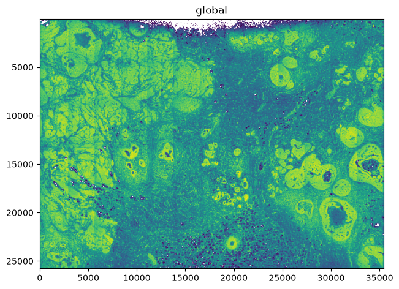
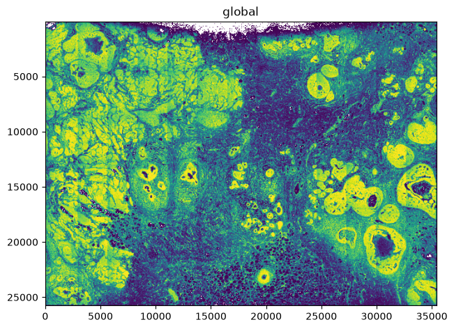
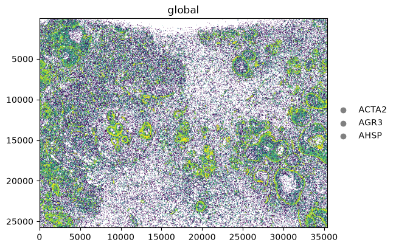

Point density maps in spatialdata-plot#
A single Xenium run localises tens of millions of transcripts. Plotting each as its own marker is
both infeasibly slow and unreadable — the points pile into a solid blob. render_points(density=True)
instead aggregates the points into a 2-D count density with datashader and renders that as a
heatmap, so you can see where signal concentrates. By the end you should be able to:
Turn a huge point cloud into a density map with
density=True.Reshape the intensity mapping with
density_how(linear,log,cbrt,eq_hist).Draw a separate density per category by colouring on a categorical column.
Recognise which parameters density ignores, and why.
We use the full 10x Xenium breast-cancer sample (Janesick et al.) from the SpatialData sandbox — about 43 million transcripts. It is a ~3.6 GB download (allow several minutes and ~4 GB free disk on the first run); it is cached afterwards, and this notebook is not re-executed in CI — its outputs are committed.
Setup#
import pooch
import spatialdata as sd
import spatialdata_plot # noqa: F401 # registers the .pl accessor
# Fetch the SpatialData-Zarr of the Xenium breast sample (cached after the first run).
url = "https://s3.embl.de/spatialdata/spatialdata-sandbox/xenium_rep1_io_spatialdata_0.7.1.zip"
files = pooch.retrieve(
url=url,
known_hash="d463c7e82e212ba87843053c5e07648ba4a233d1bef6f22c2085e7f4f18e0e9f",
path="data/xenium_rep1",
processor=pooch.Unzip(extract_dir="xenium_rep1"),
)
zarr_root = next(f.split("data.zarr")[0] + "data.zarr" for f in files if "data.zarr" in f)
sdata = sd.read_zarr(zarr_root)
sdata
SpatialData object, with associated Zarr store: /Users/tim.treis/Documents/GitHub/spatialdata-plot/docs/notebooks/examples/data/xenium_rep1/xenium_rep1/data.zarr
├── Images
│ ├── 'morphology_focus': DataTree[cyx] (1, 25778, 35416), (1, 12889, 17708), (1, 6444, 8854), (1, 3222, 4427), (1, 1611, 2213)
│ └── 'morphology_mip': DataTree[cyx] (1, 25778, 35416), (1, 12889, 17708), (1, 6444, 8854), (1, 3222, 4427), (1, 1611, 2213)
├── Points
│ └── 'transcripts': DataFrame with shape: (<Delayed>, 8) (3D points)
├── Shapes
│ ├── 'cell_boundaries': GeoDataFrame shape: (167780, 1) (2D shapes)
│ ├── 'cell_circles': GeoDataFrame shape: (167780, 2) (2D shapes)
│ └── 'xenium_landmarks': GeoDataFrame shape: (3, 2) (2D shapes)
└── Tables
└── 'table': AnnData (167780, 313)
with coordinate systems:
▸ 'aligned', with elements:
morphology_focus (Images)
▸ 'global', with elements:
morphology_focus (Images), morphology_mip (Images), transcripts (Points), cell_boundaries (Shapes), cell_circles (Shapes), xenium_landmarks (Shapes)
1. The overplotting problem#
transcripts holds ~43 million points — far too many to draw as markers. Zoomed into a small
0.25 mm² window (500×500 µm, in global-coordinate-system units) and forced onto the
matplotlib backend with method="matplotlib", the individual markers already overlap into a solid
mass; the full sample would be both unreadable and very slow. Without method, render_points would
itself switch to datashader above 10,000 points — the very aggregation we make explicit next.
from spatialdata import bounding_box_query
window = bounding_box_query(
sdata, axes=("x", "y"),
min_coordinate=[10000, 12000], max_coordinate=[10500, 12500],
target_coordinate_system="global",
)
window.pl.render_points("transcripts", size=2, alpha=0.4, method="matplotlib").pl.show()

2. A density map — density=True#
density=True bins all the points and colours each bin by its count. Dense regions — ducts,
tumour nests — stand out immediately, and the colorbar is a transcript count.
sdata.pl.render_points("transcripts", density=True).pl.show()

3. Reshaping the intensity — density_how#
Counts are heavy-tailed, so a linear mapping buries most of the structure below the few densest bins.
density_how controls how counts map to colour: linear (a true count axis), log/cbrt (compress
the range), and eq_hist (rank-based histogram equalisation, which reveals the most structure but
drops the count axis).
for how in ["linear", "log", "cbrt", "eq_hist"]:
sdata.pl.render_points("transcripts", density=True, density_how=how).pl.show()



4. Per-category density#
Colouring by a categorical column draws a separate density per category (via datashader.by).
Here, three marker genes selected with groups — each traces its own spatial distribution.
With groups set and no na_color, transcripts outside the three genes are dropped entirely (not
greyed), so each density reflects only its own gene.
sdata.pl.render_points(
"transcripts",
color="feature_name",
groups=["ACTA2", "AGR3", "AHSP"],
density=True,
density_how="eq_hist",
).pl.show()

5. What density ignores#
Because density aggregates rather than drawing markers, marker-level parameters no longer apply.
Setting them under density=True warns and is ignored: size, transfunc, an explicit
norm.vmin/vmax, and datashader_reduction (density is always a count). Only color (categorical or
None) and density_how shape the result; a continuous color column or a literal colour raises.
# size is ignored under density (warns), the map is unchanged
sdata.pl.render_points("transcripts", density=True, size=50).pl.show()
Summary#
density=Trueturns an overplotting point cloud (here ~43 M transcripts) into a datashader count density heatmap you can actually read.density_how(linear/log/cbrt/eq_hist) reshapes how counts map to colour;eq_histsurfaces the most structure at the cost of the count axis.A categorical
colordraws one density per category;color=Nonegives the overall density.Density ignores marker-level parameters (
size,transfunc,normlimits,datashader_reduction) — for those, plot markers on a cropped or smaller element, or usemethod="datashader"withoutdensity.
For reproducibility#
# ruff: noqa: F401, F811, I001, E402
# fmt: off
import warnings
import spatialdata_plot
%load_ext watermark
# fmt: on
%watermark -v -m -p spatialdata,spatialdata_plot,datashader,pooch,matplotlib
Python implementation: CPython
Python version : 3.14.6
IPython version : 9.14.1
spatialdata : 0.7.3
spatialdata_plot: 0.4.1
datashader : 0.19.1
pooch : 1.9.0
matplotlib : 3.11.0
Compiler : Clang 20.1.8
OS : Darwin
Release : 25.2.0
Machine : arm64
Processor : arm
CPU cores : 8
Architecture: 64bit